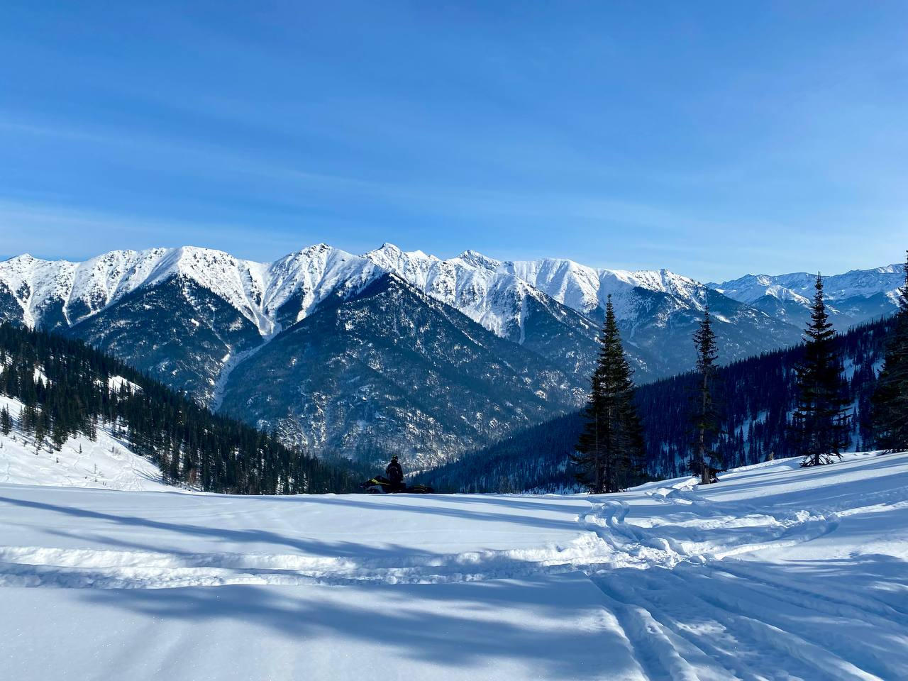

Что чувствуешь, находясь там?
Ну а это те самые сибирские морозы, которые творят чудеса.
Это ж не просто холод, это самый настоящий художник! Бывало, выйдешь утром после ночного минус сорока — а там такое! Иней опудрил каждую веточку, каждую иголку на елках. Настоящая ледяная сказка.
Весь лес стоит хрустальный, сказочный, и тихонько звенит, если ветерок подует. Фото никогда не передаст всю красоту этой природы, вся эта магия и объем не передаются. Нужно просто видеть своими глазами.
И главное — это эмоции, которые ты ощущаешь во время езды.
вернуться назад